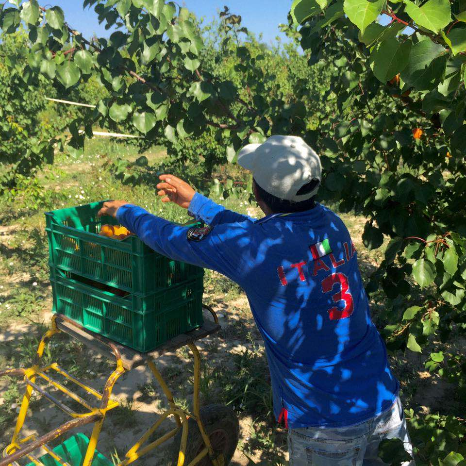
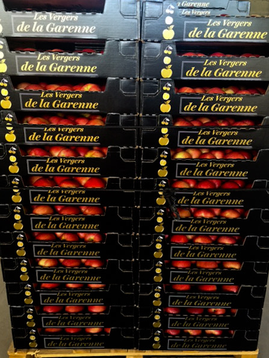
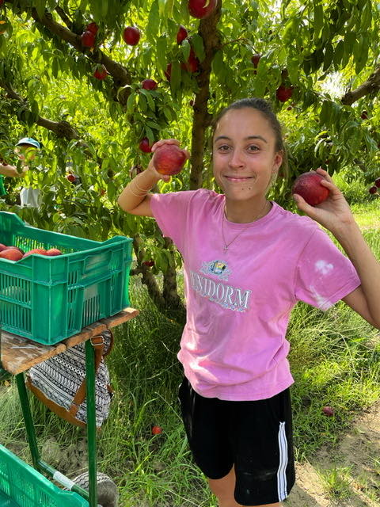

HVE level 3
High Environmental Value, the most demanding level of France’s environmental certification for farms. We obtained it in 2017, among the first farms in the Provence-Alpes-Côte d’Azur region.

Fruit growers since 1984 · Provence, France
Cherries, apricots, peaches, nectarines and apples, grown by the Sabatier family in Saint-Pierre-de-Mézoargues.
Our fruit
Harvest calendar
Indicative dates, depending on each year’s weather.
Know-how

Our experienced pickers carry out a first sort in the orchard, to guarantee superior quality.

Our whole team looks after the quality and packing of the fruit in our packing station in Saint-Pierre-de-Mézoargues.

Dedicated cold rooms guarantee the quality and proper storage of the fruit.

Wood, cardboard, plastic crates or bushels: packaging is adapted to your requirements, in any size.

We ship across France and abroad: Germany, the UK, Benelux, Asia, the Middle East and South America.
Quality
High Environmental Value, the most demanding level of France’s environmental certification for farms. We obtained it in 2017, among the first farms in the Provence-Alpes-Côte d’Azur region.
The international standard for good agricultural practice, for our main crops: cherries, apricots and apples.
GlobalG.A.P.’s social module, assessing working conditions on the farm. Cherries, apricots and apples.
Our story
In Saint-Pierre-de-Mézoargues, on the Rhône’s alluvial plains, the soil is highly fertile and ideal for orchards. Ghislain Sabatier, a third-generation farmer, set up here in 1984. Fanny Sabatier, the fourth generation, became a partner in 2022.


Contacts
Call the person in charge of your fruit.

Production and sales: apricots, apples
+33 6 12 10 15 95
Sales: cherries, apricots, peaches, nectarines
+33 6 03 76 56 55
Production and packing station
+33 6 20 61 89 94
Administration
+33 4 90 43 92 82EARL Les Vergers de la Garenne
Quartier la Garenne, Chemin du Rhône (Hangar)
13150 Saint-Pierre-de-Mézoargues, France